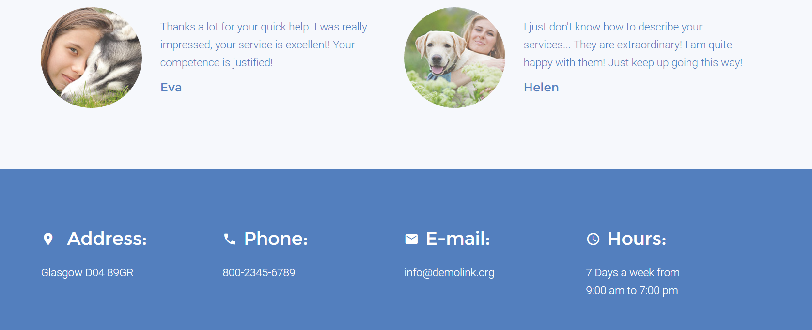
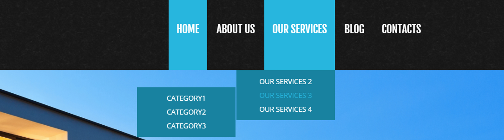
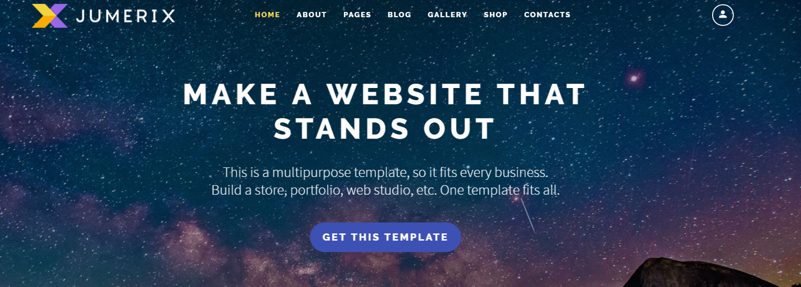
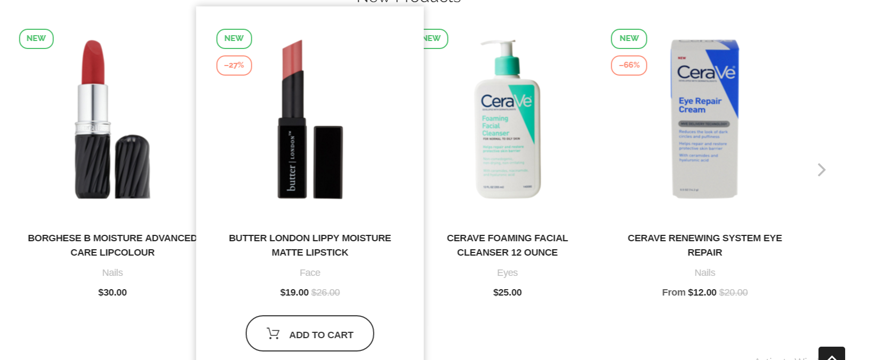
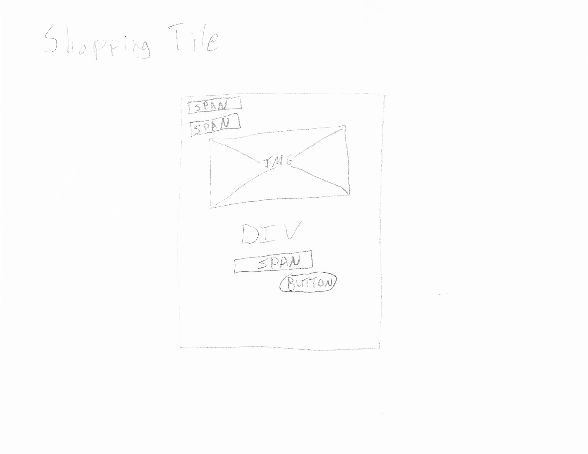

Website design and development is crucial to the growth and upkeep of the worldwide web. Keep updated on Web 2.0 components by following this blog, and checking out the cool examples.
Tiled Details
What To Practice/Learn
Giving visitors too much or too little information could be the difference between a lot or a few page hits, and in the case of eCommerce, a lot or a loss in sales.
The idea is to separate content and let the user digest it, without giving too much information or too little. That way, they don't feel overwhelmed or deterred. Having tiles allows chunks of data to be displayed to a user, insead of a long paragraph.
The goal is to accomplish the creation of these tiles and be able to utilize this concept with any website design using a multitude of different themes, colors, and icons.
Relation to the Website Development/Design Field
As a web developer/designer, the goal is to get a steady flow of customers/visitors. Having too much text to read on a single page without proper whitespace and content separation means you could lose business, or worse, lose money.
Separating content is extremely important to get recurring visitors or sales on a website. Your content directly drives users--remember that!
Separated Sections

What To Practice/Learn
Effective whitespace allows users to distinguish one part of a website from another. Trying it out with different layouts, themes, and colors lets a developer realize how they best separate pieces of their page, and sorting their content appropriately.
Relation to the Website Development/Design Field
Keeping content organized and sorted is very important to having an easy-to-navigate web page. Web pages thare are too clunky and cluttered won't get that many visitors. And with new design standards such as Google's Material Design, designers have a better idea than ever on how to design effective pages and apps!
Navigation With FX

What To Practice/Learn
Making an easy-to-navigate site requires a good navigation bar. The concept is to create a navbar that helps users reach the most important pages of the site as fast as possible. Key things to keep in mind is the transitions and effects one uses on a navbar; remember that it's supposed to be a smooth and effecient way to traverse a web site. It can't be too bulky, and the effects can't be too slow.
Relation to the Website Development/Design Field
Besides a search engine for a website, the navigation bar is the quickest way for users to traverse your site, but that doesn't mean you can't also make it look good. There's hundreds of different combinations of effects you can do for navbars using CSS or a framework like jQuery.
Making a navbar that feels natural to the click/touch is important. A website should feel like an experience, not just software.
CTA With Poster

What To Practice/Learn
Creating an effective CTA should be the main goal for any website.
What do you want your users to do for you?
Buy a product?
Refer their friends for a service?
Upload their documents?
Send a payment to you for a good/service?
The list can go on and on. It's very important to bring attention to the CTA, which is what I personally can improve upon. I as a designer tend to be bad at making things "pop" out and smack the user in the face.
Relation to the Website Development/Design Field
As with any form of advertising, the CTA on a website is crucial to have people do exactly what you want them to do on your site. Users are more than likely coming to your site looking to accomplish a task anyways; it's important to sure you bring the Call to Action front and center for them.
Interactive Shopping Tiles
Featured Article

What To Practice/Learn
eCommerce is an evergrowing online field. Perfecting it should be a field in itself. Along with keeping content separated, you also need to try to find creative ways to give users "quick details" on items.
You need to find the perfect balance between content and padding.
Otherwise you will lose customers.
This is where the balance between those two elements matters most. Also, focusing on the relevancy of the details is also important for quick details.
Relation to the Website Development/Design Field
eCommerce is an important part of online traffic.
Creating successful eCommerce helps maintain global sales for business large and small.
Not to mention eCommerce accounts for a large percentage of business profits who sell things online and in a brick and mortar location.
Creating an eCommerce site that is fast, fluid, and effective at helping people can go a long way to rake in thousands, millions, or even billions of dollars in revenue.
How to Go About Creating This
- Create a DIV for each tile
- Create BUTTONs for "Add to Cart" and "Add to Favorites"
- Float the container DIVs and make them follow a fluid grid layout
- Add an optional button to view a popup with additional details, but not as much as the main product page itself
Breakdown

Things to Consider
- Font colors should be dependent on the button or division being used to create the parent element
- Things could either be centered or stacked in miniature columns within each tile